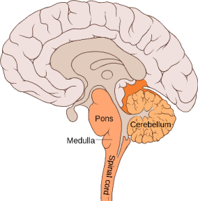
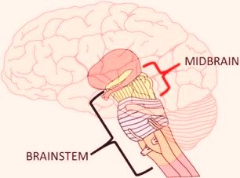
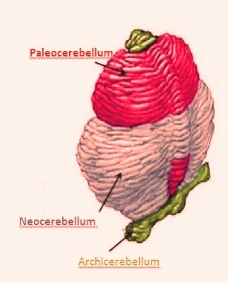

Rombasti mozak
Rombasti mozak čine: produžena moždina, moždani (Varolijev) most, mali mozak i četvrta moždana komora.Produžena moždina se nalazi iznad kičmene moždine, ispod Varolijevog mosta i ispred malog mozga. U njoj se ukrštaju senzorni i motorni nervi koji povezuju mozak sa ostalim delovima tela, tako da desna hemisfera velikog mozga komunicira sa levom polovinom tela i obrnuto.
Moždani most se nalazi iznad produžene moždine. To je snop nerava koji prenose signale između velikog mozga i kičmene moždine i povezuje svaku od hemisfera velikog mozga sa suprotnom hemisferom malog mozga.
Produžena moždina i moždani most zajedno sa srednjim mozgom čine moždano stablo . To je evoluciono najprimitivniji deo mozga. Sredinom moždanog stabla (od kičmene moždine do međumozga) pruža se retikularna formacja. Sačinjena je od ostrvaca sive mase razdvojenih snopovima bele mase tako da je mrežastog izgleda. Ona odlučuje koje će se od senzornih informacija proslediti velikom mozgu i na taj način nam pomaže da se koncentrišemo usled primanja velikog broja informacija iz spoljašnje sredine. U moždanom stablu se nalaze najviši centri autonomnog nervnog sistema: za disanje, krvotok (kontroliše rad srca i krvni pritisak), kašalj, kijanje, povraćanje, gutanje, žvakanje, sisanje, lučenje suza…
Mali mozak se nalazi u zadnjem donjem delu lobanje, iza moždanog mosta i ispod potiljačne zone velikog mozga. On je, kao i veliki mozak, podeljen na dve hemisfere, samo što putevi iz leve i desne polovine tela nisu ukršteni, tako da svaka hemisfera kontroliše svoju stranu tela. Sa aspekta filogeneze, mali mozak ima tri dela: archaeocerebellum (učestvuje u regulaciji mišićnog tonusa i održavanju ravnoteže), paleocerebellum (kontroliše mišićni tonus i aktivnost mišića) i neocerebellum (omogućava i sprovodi automatsku regulaciju redosleda i obima voljnih pokreta). Ovi delovi su poređani od prednjeg ka zadnjem delu malog mozga.
Postoji još jedna podela, sleva na desno: u sredini je vermis (tu se nalaze centri koji nam omogućavaju da imamo svest o položaju određenih delova tela u prostoru), a bočno su leva i desna hemisfera. Mali mozak ima tri para krakova koji mu služe za komunikaciju sa ostalim delovima mozga: gornji (koji ga povezuje sa srednjim mozgom), srednji (koji ide prema Varolijevom mostu) i donji (koji ide prema kičmenoj i produženoj moždini).